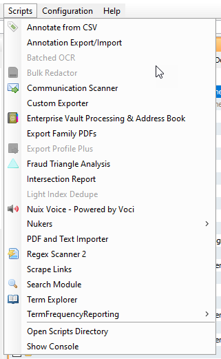
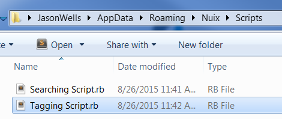
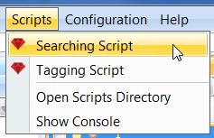
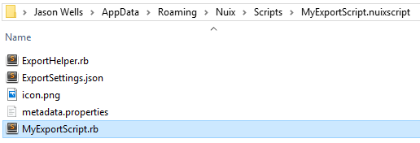
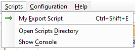
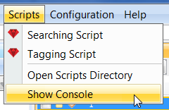

Running Scripts In Nuix Workstation
Nuix provides an API which supports execution of scripts written in Ruby, Python and ECMA Script (AKA Javascript). Scripts can be used to automate almost anything that can be accomplished manually through the Graphical User Interface (GUI) of Nuix Workstation. Scripts also enable more advanced processes which cannot be easily accomplished manually in the GUI. A script can be executed several different ways:
From the scripts menu
The scripts menu in Nuix Workstation provides a convenient way to execute scripts:

The scripts menu in Nuix Workstation provides a convenient way to execute scripts:
- System level scripts accessible to all users on the system can be placed in the directory
C:\ProgramData\Nuix\Scripts - User level scripts accessible to a particular user can be placed in the directory
C:\Users\USERNAME\AppData\Roaming\Nuix\ScriptswhereUSERNAMEis the specific user’s name.
Scripts placed in these directories are discovered in one of the following ways:
- As individual files with extensions
.rbfor Ruby,.pyfor Python and .jsfor ECMA Script (AKA Javascript) (see below) - As script bundles (see below)
Individual files
As individual files with extensions .rb for Ruby, .py for Python and .js for ECMA Script (AKA Javascript) (see below) As script bundles (see below)
.rbfor Ruby.pyfor Python.jsfor ECMA Script (AKA Javascript)


While populating entries in the Scripts menu, Nuix inspects the first several lines of each script file found for the presence of several special comments:
- Menu Title – Specifies the label used for this script’s entry in the Scripts menu.
- Needs Case – Specifies whether this script requires a case to be open in the Workstation interface before the script can be ran. A value of
truemeans the script will be disabled in the menu when no case is open. If your script is going to work with the global variable$current_case, it is a good idea to set this totrue. - Needs Selected Items – Specifies whether this script requires items to be checked in the results view before this script can be ran. A value of
truemeans the script will be disabled in the menu if no items are currently checked in the results view. If your script is going to work with the global variable$current_selected_items, it is a good idea to set this totrue.
An example of this in a Ruby script looks like the following:
# Menu Title: My Export Script
# Needs Case: true
# Needs Selected Items: true
puts "Export code would go here..."
This is convenient for single file scripts. As a script gets more complex it may begin to span multiple files, in which case you may want to instead use a script bundle (see below).
Script bundles
Scripts which are more complex and span multiple files are better served as a script bundle. When using a script bundle multiple script files are represented in the scripts menu as only a single menu entry. For example, imagine you have a Ruby script which consists of 3 files, the main script file and 2 supporting files which are loaded by the main script file at run-time. Without a script bundle, each of the 3 files would get a script menu entry, while only 1 of those files is intended actually be executed directly.
To make a script bundle, you need to do several things:
- Place your script in a sub-directory of a scripts folder with a name ending in
.nuixscript, for example a directory namedMyExportScript.nuixscript - In your script bundle sub-directory have a file named
metadata.properties(more on this below) - In your script bundle sub-directory have one or more script files (
.rb,.py,.js)

The metadata.properties file is a standard Java properties formatted file. This files provides Nuix information about the script similar to the special comments which can be provided in individual script files. This file supports the following entries:
- MainScript – This required entry instructs Nuix of the primary script file in the Script Bundle which is to be executed when the corresponding Scripts menu entry is clicked.
- MenuTitle – This entry instructs Nuix as to what label should be used in the Scripts menu for this script.
- NeedsCase – This entry instructs Nuix as to whether your script requires that a case be open in the Nuix Workstation GUI before being ran. When this value is set to
true, the script’s entry in the Scripts menu will be disabled if a case is not currently open. - NeedsSelectedItems – This entry instructs Nuix as to whether you script requires that items are checked in the results view before being ran. When this value is set to
true, the script’s entry in the Scripts menu will be disabled if no items are currently checked in the results view. - SmallIcon – This entry specifies the icon used for this script’s menu entry. Value provided should be the file name (without directory) of an image file in the same directory as the
metadata.propertiesfile. Most common image formats are supported, but PNG files are the convention. - MenuKeyboardShortcut – This entry specifies a keyboard shortcut to be associated to this script’s menu entry.
- MenuMnemonic – This entry specifies the mnemonic underlined in the menu. Provided value should be a single character which is present in the name.
An example of this file might look like the following:
MainScript=MyExportScript.rb
MenuTitle=My Export Script
NeedsCase=true
NeedsSelectedItems=true
SmallIcon=icon.png
MenuKeyboardShortcut=ctrl shift E
MenuMnemonic=E

From the Script Console
You can also run a script using the Script Console dialog in the Workstation interface:

Once the script console dialog is up, you may paste or type your code into the upper text area. Make sure you select the appropriate script language. Then click the Execute button to run it. While your script is running you may click the Cancel button to terminate it early.

Note
When a script is executed via the scripts menu, the output of that script will also show up in the script console’s output area.From the Command Line Interface
When you install Nuix Workstation, part of that installation is the executable file nuix_console.exe. This is a “headless” version of Nuix which specializes in executing scripts. When ran, this version of Nuix will startup without a GUI and then proceed to execute the script you specify.
If you have Nuix Workstation installed here:
C:\Program Files\Nuix\Nuix 7.8
And you have a Ruby script located here:
D:\NuixScripts\MyExportScript.rb
Than you can run the following command to run that script using nuix_console.exe:
"C:\Program Files\Nuix\Nuix 7.8\nuix_console.exe"
"D:\NuixScripts\MyExportScript.rb"
nuix_console.exe supports many of the same arguments that the Nuix Workstation executable does:
"C:\Program Files\Nuix\Nuix 7.8\nuix_console.exe" -Xmx24g -licencesourcetype dongle "D:\NuixScripts\MyExportScript.rb"
If you intend to run nuix_console.exe with a license obtained from a Nuix license server that requires username/password authentication, you will need to set environment variables with appropriate values for username and password. In Windows this can be accomplished by doing the following in a batch file:
SET NUIX_USERNAME=username
SET NUIX_PASSWORD=password
"C:\Program Files\Nuix\Nuix 7.8\nuix_console.exe" ^
-Xmx24g ^
-Dnuix.registry.servers=127.0.0.1 ^
"D:\NuixScripts\MyExportScript.rb"
It is worth noting that scripts executed using nuix_console.exe will not have the following variables populated as they would be in the GUI:
$current_case– Since there is no GUI for the user to have opened a case in.$current_selected_items– Since there is no GUI for the user to have selected items in.$window– Since there is no GUI for the Window object to refer to.